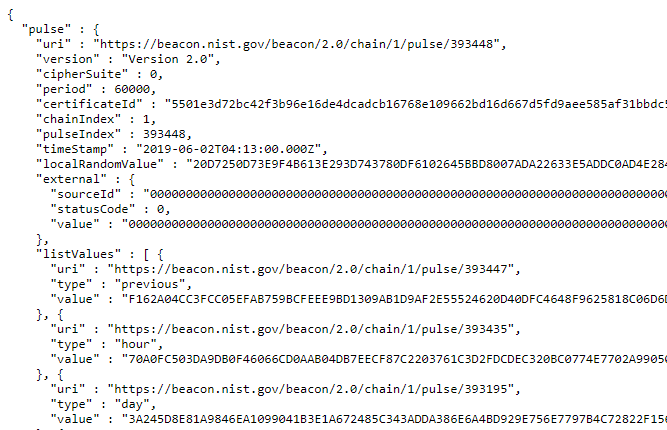
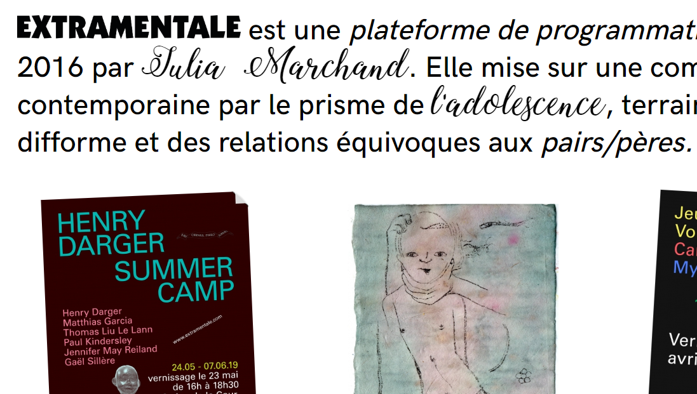
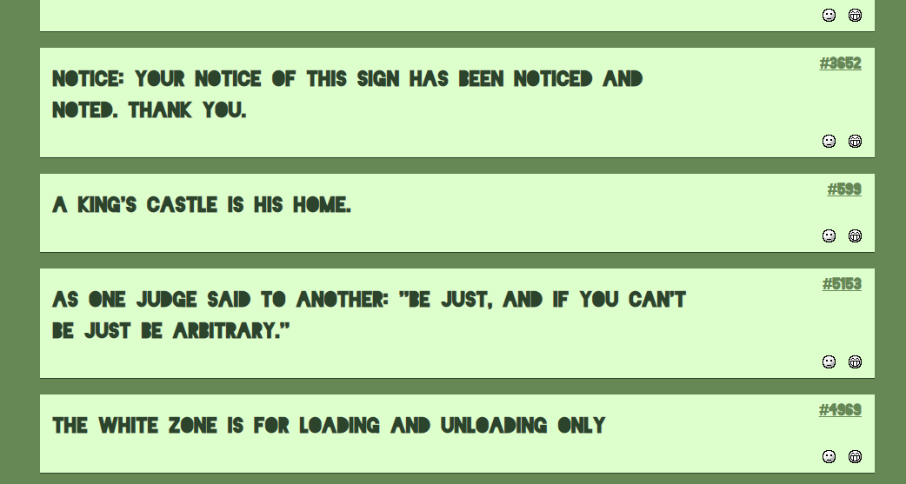
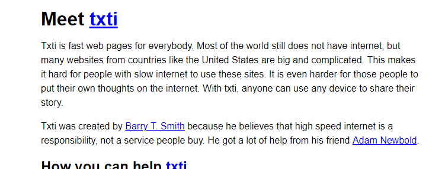
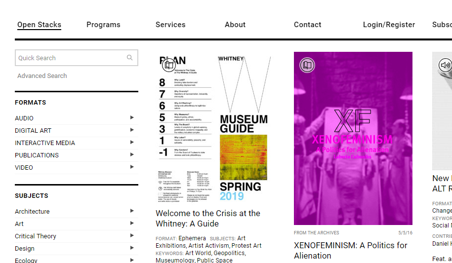

findings - week of 26.5.2019
This post is the first in a series of posts I wanted to use in order to document things I find on the internet during late-night search-engine rabbitholes. my goal is to post at least five findings per week, every saturday night or early sunday morning.
without further ado, here's the stuff I found this week.
number one: nist beacon pulse.
the nist randomness pulse is a public source of randomness. it shouldn't be used to generate cryptographic keys, according to the website, but aside from that the possibilities are endless. when you call the api, you'll get some json that looks like this:
which you can then do with as you'd like. the nist site describes several use cases for data such as this, all of which are heavily scientific and not of much interest to me currently. so, I am researching experimental projects within my field (web design) that involve random data. if you have an idea for something this could be used for, please contact me! or don't. keep your secrets.
number two: extramentale.
extramentale is a curatorial/editorial platform for a certain genere of modern art. it explores a theme called primaverism, a term that I've seen defined as "the obsession with first experiences" (x).
there's not much more to say about this one, as it speaks for itself. just take a look on your own; it also leads to some other interesting rabbitholes, so check it out.
number three: one-sentence memebomb.
principicadiscordia is a rabbithole of its own, but this particular page stuck out to me as novel. click a category at the top of the page, recieve randomly generated shitposts and some bizzarely pseudo-poetic one- and two-liners.
number four: txti.es.
txti.es is essentially a static web page generator by @thebarrytone that uses markdown. the purpose of it is to create web pages that are fast and accessible on *any* and all devices. there's even an image on the site of a txti post being viewed on a flip phone, something most modern websites don't even support.
number five: library stack.
library stack is a database of digital publications that primarily focuses on non-traditional/obscure/unknown visual artworks. it allows the user to search by subject, format, and keywords; it also offers a front page containing a selection of pieces from the ever-growing collection.
as far as I can tell, all of this material is free and open for anyone to download and consume however you please. if you like reading interesting/esoteric/'strange' publications, please for the love of god go look through this library. there are a ton of rabbitholes to go down from this website, and a lot of information to consume.
I hope some of these links were in some way fascinating to you, if not useful. I'll continue the series one week from this date. I'll keep the amount of links at five for now, despite the massive amount of research I do and especially because of the type of content I'm collecting. also, if you've found something good here, please show it to your friends! I am somewhat kopimist, so I'm a strong believer in sharing information. see you next time!
currently listening to DAYDREAM by rook&nomie and Graces of Heaven by aran.